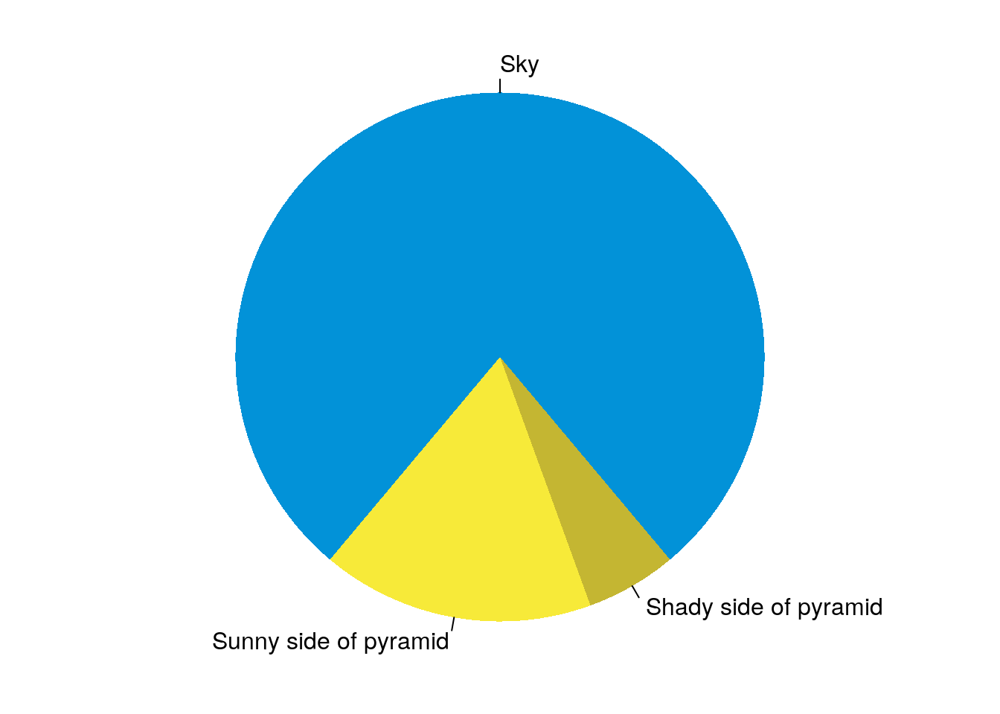
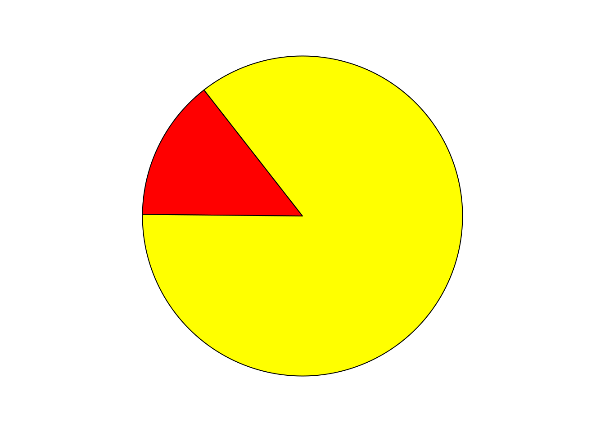

3 Other features
3.1 Figure caption
You can also add captions and numbers to figures. See Figure 3.1 for example.
par(mar = c(0, 1, 0, 1))
pie(
c(280, 60, 20),
c('Sky', 'Sunny side of pyramid', 'Shady side of pyramid'),
col = c('#0292D8', '#F7EA39', '#C4B632'),
init.angle = -50, border = NA
)

Figure 3.1: My favorite pie chart.
3.2 Dynamic content
3.2.1 Animation
par(mar = c(0, 1, 0, 1))
a = sample(0:359, 1)
for (i in 1:2) {
pie(c(i %% 2, 6), col = c('red', 'yellow'), labels = NA,
init.angle = a)
}
3.2.2 Leaflet maps
3.2.3 DataTables
Allaire, JJ, Yihui Xie, Jonathan McPherson, Javier Luraschi, Kevin Ushey, Aron Atkins, Hadley Wickham, Joe Cheng, Winston Chang, and Richard Iannone. 2020. Rmarkdown: Dynamic Documents for R. https://CRAN.R-project.org/package=rmarkdown.